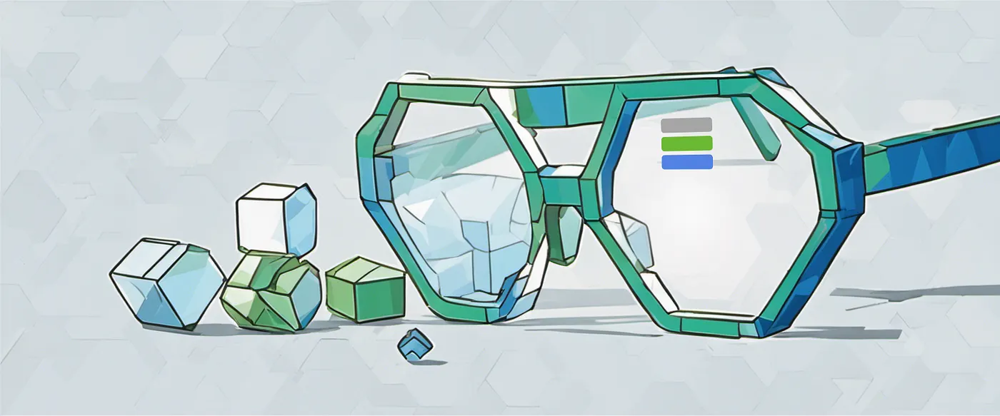

Tengstrand's Blog
The search for simpler code while having fun.
The search for simpler code while having fun.

The focus in this second part of the blog series is to showcase the benefits of getting quick feedback when working with code. We'll do this by implementing the removal of complete rows when a Tetris piece is placed on the board.
Published: 2026-01-11

In this blog series, I will show how to work with the Polylith architecture and how organizing code into components helps create a good structure for high-level functional style programming.
You might feel that organizing into components is unnecessary, and yes, for a tiny codebase like this I would agree. It's still easy to reason about the code and keep everything in mind, but as the codebase grows, so does the value of this structure, in terms of better overview, clearer system boundaries, and increased flexibility in how these building blocks can be combined into various systems.
We will get familiar with this by implementing a self-playing Tetris program in Clojure and Python while reflecting on the differences between the two languages.
Published: 2025-12-28
In the Hexagonal architecture, we start with the application core, and let that grow over time. Polylith starts at another end, with the bricks, where each brick does one thing, and if we want to do one more thing, then we create another brick.
If you are a fan of the Hexagonal architecture, also known as Ports & Adapters, we think you’ll love the way Polylith turns your system into fine-grained Lego-like bricks!
Published: 2023-11-01
Tagged: architecture polylith

Writing software is hard.
There are so many things to deal with, so many moving parts and things that can go wrong that it is easy to get lost. It's not only about building the right thing, but also about building the thing right.
Published: 2019-09-14
Tagged: complexity
Today I'm proud to announce a new software architecture, called Polylith!1
I hope that Polylith can have a positive affect on the software industry, by focusing on simplicity and developer happiness and efficiency.
Published: 2018-10-02
Tagged: architecture clojure polylith
Note: The Micro Monolith architecture has been replaced by the Polylith architecture, which has abandoned symbolic links and dependency injection in favor of simple configuration.
Writing quality software, with thousands or millions of lines of code, is probably one of the most challenging and complex tasks you can undertake. Here I will present an alternative, amazingly simple way of modularising software, complete with code examples in Java and Clojure!
Published: 2016-12-28
Tagged: architecture polylith